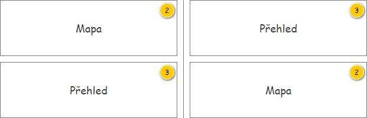
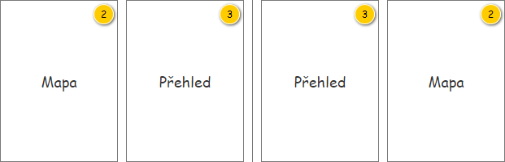
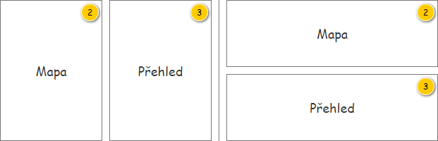

Stručný popis
Uživatelské rozhraní slouží ke sledování realizace Denních výkonů v reálném čase.
Uživatelské rozhraní
Uživatelské rozhraní je tvořeno z ucelených skupin, které budou postupně popsány.
Rozložení
Drátový diagram

Přehled UI komponent
| Callout | Skupina |
|---|---|
| 1 | Nástrojová lišta |
| 2 | Mapa realizace denních výkonů |
| 3 | Přehled realizace denních výkonů |
| 4 | Průběh realizace |
| 5 | Detail událostí |
Rozměry panelů
Pro panely, jejichž rozměry lze uživatelsky nastavit, jsou níže uvedeny minimální rozměry.
| Callout | Panel | Minimální šířka | Minimální výška | Poznámka |
|---|---|---|---|---|
| 2 | Mapa realizace denních výkonů | 400 px | 200 px | panely 2 a 3 jsou propojené |
| 3 | Přehled realizace denních výkonů | 400 px | 200 px | panely 2 a 3 jsou propojené |
| 4/5 | Průběh realizace/ Detail událostí | 4/5 jsou jeden panel se dvěma záložkami, jsou svázany s panelem mapa - přebírají výšku z panelu mapa, šířku lze měnit, tím se mění i šířka panelu mapa |
Poznámka: V případě, že obsah panelu překračuje jeho rozměry, je zobrazen scrollbar v příslušném směru.
Chování
Nastavení rozložení obrazovky
V rámci hlavičky aplikace jsou k dispozici tlačítka, která umožňují změnit základní rozložení obrazovky. Tlačítka jsou vložena v uvedeném pořadí za nadpis – viz tabulka. Popis chování je uveden následovně.
Základní rozložení obrazovky
Základní rozložení obrazovky obsahuje 2 části

| Callout | Panel | Poznámka |
|---|---|---|
| 1 | 2 a 4/5 Mapa a (Průběh realizace / Detail události) | spojené panely; panely 4/5 lze vypínat zapínat, pokud jsou zapnuty, vždy jsou v pravé části mapy |
| 2 | 3 Přehled | panel se dvěma záložkami, panel lze zapínat a vypínat |
| Komponenta | Typ komponenty | Výchozí hodnota | ToolTip | Chování | Poznámka |
|---|---|---|---|---|---|
| Změnit rozložení obrazovky | ToggleButton
| Není stisknuto (FALSE). | Změnit rozložení obrazovky. | Pokud je tlačítko stisknuto (TRUE), jsou panely umístěny pod sebou:  Jinak (FALSE) jsou umístěny vedle sebe:  Poznámka: Pořadová čísla odpovídají těm v hlavním drátovém diagramu. | platí pro panely 2 a 3 (panely 4/5 nejsou zapnuty - tlačítko pro zobrazení detailu není stisknuto) |
| Změnit pořadí panel | ToggleButton
| Není stisknuto (FALSE). | Změnit pořadí panelů. | Pokud je tlačítko stisknuto (TRUE), je jako první zobrazen přehled a jako druhá mapa: Jinak (FALSE) jsou panely zobrazeny v opačném pořadí.  Poznámka: Pořadová čísla odpovídají těm v hlavním drátovém diagramu. | platí pro panely 2 a 3 (panely 4/5 nejsou zapnuty - tlačítko pro zobrazení detailu není stisknuto) |
| Zobrazení/skrytí detailu | ToggleButton
| Je stisknuto | Detail | Panely jsou pod sebou
Panely jsou vedle sebe
Poznámka: Pořadová čísla odpovídají těm v hlavním drátovém diagramu. | platí pro panel 2, 3, 4/5 poměr šířky panelů 2 a 4/5 lze měnit posuvníkem |


Interakce v rámci obrazovky
Obrazovka jako taková je složena z dílčích panelů, které spolu komunikují – akce provedená v jednom panelu může způsobit spuštění akce v panelu jiném (např. označení záznamu). Jednotlivé interakce si nyní popíšeme…
Poznámka: Podrobnější popis interakcí je popsán v rámci jednotlivých panelů obrazovky.
Označení lokace objednané služby
Lokaci objednané služby je možné označit hned několika způsoby, ty si nyní popíšeme z pohledu dílčích panelů obrazovky…
- Mapa realizace denních výkonů (kliknutí na lokaci v mapě),
- Přehled realizace denních výkonů (kliknutí na lokaci v diagramu),
- Průběh realizace (kliknutím na řádek s lokací),
- Detail událostí (kliknutím na událost svázanou s lokací).
Označení Lokace objednané služby se pak projeví jejím zvýrazněním v jednotlivých panelech…
- Mapa realizace denních výkonů (zvýraznění dané lokace),
- Přehled realizace denních výkonů (zvýraznění dané lokace),
- Průběh realizace (zvýraznění řádku s lokací, je-li zobrazeno),
- Mapa realizace denních výkonů (zvýraznění události spojené s danou lokací)
- Detail událostí (zvýraznění řádků událostí spojených s danou lokací, je-li zobrazeno)
Označení událostí (FOB i PTO) lze provést
- Mapa realizace denních výkonů (kliknutí na událost v mapě),
- Detail událostí (kliknutím na událost svázanou s lokací).
Označení události (FOB/ PTO) se projeví zvýrazněním v jednotlivých panelech
- Mapa realizace denních výkonů (zvýraznění dané události a svázené lokace, je-li),
- Přehled realizace denních výkonů (zvýraznění dané lokace svázené s událostí, je-li),
- Průběh realizace (zvýraznění řádku s lokací svázanou s událostí, je-li),
- Detail událostí (zvýraznění řádku události).
Poznámka: Při označení Lokace objednané služby současně dochází k označení odpovídající Realizace denního výkonu, která je také zvýrazněna (viz Označení realizace denního výkonu).
Označení realizace denního výkonu
Realizaci denního výkonu je možné označit hned několika způsoby, ty si nyní popíšeme z pohledu dílčích panelů obrazovky…
- Mapa realizace denních výkonů (kliknutí na jakoukoliv součást dané realizace denního výkonu včetně dílčí lokace),
- Přehled realizace denních výkonů (kliknutí na jakoukoliv součást dané realizace denního výkonu včetně dílčí lokace).
Označení Realizaci denního výkonu se pak projeví jejím zvýrazněním v jednotlivých panelech…
- Mapa realizace denních výkonů (zvýraznění plánované i skutečné trajektorie včetně souvisejících informací),
- Přehled realizace denních výkonů (zvýraznění řádku s danou realizací denního výkonu).
Poznámka: Pokud je současně označena některá z obsažených Lokací objednané služby, je také zvýrazněna (viz Označení lokace objednané služby).
Náhled
Dále je uveden drátový diagram s náhledem celé obrazovky.

Nastavení
Persistence nastavení obrazovky
| Skupina | Ovládací prvek | Výchozí hodnota | Poznámka |
|---|---|---|---|
| Skupiny – šířky panelů | – | – | Pokud si uživatel změní poměr velikosti mezi jednotlivými panely obrazovky, je nutné toto rozložení zachovat. Poměr je pak možné měnit mezi Mapou realizace denních výkonů a Přehledem realizace denních výkonů. Poznámka: Je potřeba počítat s tím, že uložené poměry velikosti mezi jednotlivými panely mohou být v rozporu s minimálními rozměry panelu například ve chvíli, kdy uživatel použije monitor s menším rozlišením – uložené nastavení v takovém okamžiku nemusí korespondovat s aktuálním zobrazením v prohlížeči. |
| Skupiny – rozložení | – | Pod sebou | Pokud uživatel změní rozložení jednotlivých panelů obrazovky, je nutné toto rozložení zachovat. Poznámka: Panely mohou být zobrazeny buď pod sebou (výchozí stav) nebo vedle sebe. |
| Skupiny – pořadí | – | Mapa-Přehled | Pokud uživatel změní pořadí jednotlivých panelů obrazovky, je nutné toto rozložení zachovat. Poznámka: V závislosti na rozložení obrazovky určuje, který panel je umístěn nahoře/vlevo. |
| Nástrojová lišta | – |
| Pokud uživatel změní vstupní data nastavená v nástrojové liště, je nutné toto nastavení zachovat. Jsou ukládány následující hodnoty:
Uživateli jsou pak dostupné pouze takové Typy dopravy, které jsou v rámci jeho nasazení k dispozici (atribut Je k dispozici). |
| Mapa realizace denních výkonů | Nástrojová lišta | Výchozí nastavení je uvedeno v tabulce s popisem nástrojové lišty. | Pokud uživatel změní nastavení mapy, je nutné toto nastavení zachovat. Ukládána jsou pak všechna nastavení obsažená v nástrojové liště – viz nástrojová lišta. |
| Přehled realizace denních výkonů | Časová osa | 0:00-23:59 | Pokud uživatel změní nastavení zobrazeného detailu v přehledu Realizací denního výkonu, je nutné toto nastavení zachovat. |
| Přehled realizace denních výkonů | Nástrojová lišta | Zobrazit vše | Pokud uživatel nastaví, která data z přehledu se mají zobrazovat v mapě, je nutné toto nastavení zachovat. Poznámka: Mohou nastat následující případy:
|
| Přehled realizace denních výkonů | Nástrojová lišta | Filtr naplánovaných denních výkonů | Pokud uživatel nastaví tento filtr, je nutné toto nastavení zachovat. |
Parametry URL
| Parametr | Skupina | Hodnota | Poznámka |
|---|---|---|---|
| Provozovna | Nástrojová lišta | Entita Provozovna. | – |
| Datum realizace | Nástrojová lišta | Datum. | Pro datum realizace v budoucnosti není obrazovka dostupná. |
| Typ dopravy | Nástrojová lišta | Entita Typ dopravy (kolekce). | Umožňuje zadat více Typů dopravy zároveň. Uživateli jsou pak dostupné pouze takové Typy dopravy, které jsou v rámci jeho nasazení k dispozici (atribut Je k dispozici). |
| Označené denní výkony | Přehled realizace denních výkonů | Entita Realizace denního výkonu (kolekce). | Umožňuje zadat více označených položek zároveň (nepovinný parametr). |
Poznámka:
- Konkrétní chování a jednotlivé validace jsou uvedeny v odpovídajícím UC – viz 300UC01: Zobrazit obrazovku monitoringu realizace.
- Jednotlivé parametru v URL nemusí být čitelné pro lidi.
Grafický návrh
Použité barvy a ikony
| Použití | Barva | Ikona | Výskyt | |
|---|---|---|---|---|
| Akce v lokaci | Vyzvednout | – | ra-arrow-corner-up |
Tabulka realizace trasy denního výkonu
|
| Umístit | – | ra-arrow-corner-down | ||
| Vyprázdnit | – | ra-empty-out | ||
| Navštívit | – | ra-location | ||
| Typ lokace | Místo realizace | – | ra-location | Tabulka realizace trasy denního výkonu
|
| Likvidační místo | #D5AE41 | ra-recycle | ||
| Provozovna | #006E6D | ra-list | ||
| Jiné | – | – | ||
| Časový interval | – | – | ||
| Místo dočasného uložení | – | ra-group | ||
| Realizace lokace | Obslouženo | #779919 | – |
Tabulka realizace trasy denního výkonu
|
| Neobslouženo | #672E3B | – | ||
| Spojnice lokací v diagramu | Mezi položkami | #919DAF | – |
|
| V rámci položky | #C1B499 | – | ||
| Spojnice lokací v mapě | Plán – základní | #223A5E | – |
|
| Skutečnost – základní | #4F84C4 | – | ||
| Plán – označená | #4A148C | – | ||
| Skutečnost – označená | #AB47BC | – | ||
| Interval omezení | Mimo provozní dobu | #CCCCCC | – |
|
| Alokace na servis | #B3B3B3 | ra-wrench | ||
| Ostatní | Aktuální čas | #FAC900 | – |
Tabulka realizace trasy denního výkonu
|
| Lokace Rozdělení | #800080 | – | ||
| Lokace Start a Cíl | #4F84C4 | – | ||
| Lokace Přestávka | #999999 | ra-utensils | ||
| Nedodržené pořadí obsluhy – písmo | #672E3B | – | ||
| Nedodržené pořadí obsluhy – pozadí | #F3D6E4 | – | ||
FLW Událost | – | ra-play | ||
| FOB informace o realizaci lokace objednané služby | – | ra-user, ra-cross | ||
Grafický návrh
Revize
12. 12. 2025: Eva Šťastná
| Odkaz | Stručný popis změny/doplnění |
|---|---|
| Rozšíření o panel se záložkami Průběh realizace a Detail událostí (naznačeno barevně) - v rámci celé obrazovky |
25. 2. 2025: Tomáš Nadrchal
| Odkaz | Stručný popis změny/doplnění |
|---|---|
| Persistence nastavení obrazovky | Rozšíření uživatelského nastavení pro přehled RDV (naznačeno růžově). |
10. 2. 2025: Tomáš Nadrchal
| Odkaz | Stručný popis změny/doplnění |
|---|---|
| Interakce v rámci obrazovky | Doplněn chybějící popis interakci v rámci obrazovky, změny oproti stávajícímu chování označeny (naznačeno modře). |
2. 3. 2023: Tomáš Nadrchal
| Odkaz | Stručný popis změny/doplnění |
|---|---|
| Nastavení | Doplněna poznámka o novém způsobu při vyhodnocení dostupnosti typů dopravy (naznačeno modře). |
11. 3. 2020 Tomáš Nadrchal
| Odkaz | Stručný popis změny/doplnění |
|---|---|
| Použité barvy a ikony | Změna barvy pro vykreslení aktuálního času (naznačeno modře). |
22. 7. 2019 Miroslav Slivoně
| Odkaz | Stručný popis změny/doplnění |
|---|---|
| Rozměry panelů | Doplněny minimální rozměry panelů. |